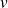
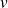

Manipulation de graphes
Caractéristiques d'un graphe
L'objectif de cette partie est de créer un module graphes.py contenant les diverses fonction utiles pour la manipulation de graphes. Ce module pourra faire appel au module sur la manipulation de piles et de files piles_files.py.
# Importation des modules maisonimport piles_files as pf
import graphes_exemples as gex
Question
Écrire la fonction voisins(Graphe, Sommet), qui renvoie la liste des sommets voisins du sommet entré en argument pour un graphe. C'est aussi la liste des sommets adjacents.
def voisins(Graphe, Sommet):
'''renvoie la liste des sommets voisins du sommet entré en argument par son index pour un graphe.'''return( [ col for col in range(len(Graphe[1][Sommet])) \
if Graphe[1][Sommet][col] not in [0, inf] ] )
Question
Écrire la fonction predecesseurs(Graphe, Sommet), qui renvoie, pour un graphe, la liste des sommets auxquels le sommet entré en argument est adjacent.
def predecesseurs(Graphe, Sommet):
'''renvoie la liste des sommets prédécesseurs au sommet entré en argumentpour un graphe.''' res = []for ligne in range(len(Graphe[1])):
if Graphe[1][ligne][Sommet] not in [0, inf]:
res.append(ligne)
return(res)
Question
Écrire la fonction degre_sortant(Graphe, Sommet), qui renvoie le degré sortant du sommet entré en argument.
def degre_sortant(Graphe, Sommet):
'''renvoie le degré sortant du sommet entré en argument par son index.'''return(len(voisins(Graphe, Sommet)))
Question
Écrire la fonction degre_entrant(Graphe, Sommet), qui renvoie le degré entrant du sommet entré en argument.
def degre_entrant(Graphe, Sommet):
'''renvoie le degré entrant du sommet entré en argument par son index.'''return(len(sont_adjacents(Graphe, Sommet)))
Fonctions complémentaires
On peut compléter cette liste par des fonctions permettant de modifier un arc ou une arête, d'ajouter ou de supprimer un sommet dans un graphe.
def Etiq(liste_sommets, Graphe):
'''renvoie la liste de sommets entrés en arguments sous forme d'indexen une liste de sommets avec les étiquettes choisies'''if type(liste_sommets) != list :
return(Graphe[0][liste_sommets])
return([Graphe[0][sommet] for sommet in liste_sommets])
def Index(liste_etiquettes, Graphe):
'''renvoie la liste de sommets entrés en arguments sous formed'étiquettes en une liste de sommets sous forme d'indexavec les étiquettes choisies'''if type(liste_etiquettes) != list:
return(Graphe[0].index(liste_etiquettes))
return([Graphe[0].index(etiquette) for etiquette in liste_etiquettes])
def modif_arc(Graphe, Som1, Som2, poids):
'''modifie un arc de la matrice d'adjacence d'un graphe.'''Graphe[1][Som1, Som2] = poids
def modif_arete(Graphe, Som1, Som2, poids):
'''modifie une arête de la matrice d'adjacence d'un graphe.'''Graphe[1][Som1, Som2] = poids
Graphe[1][Som2, Som1] = poids
def ajout_sommet(Graphe):
'''ajoute un sommet à un graphe représenté par sa matrice d'adjacencelié à aucun autre sommet.'''for ligne in Graphe[1] :
ligne.append(inf)
Graphe[1].append([inf] * (len(Graphe[1]) - 1) + [0])
def supr_sommet(Graphe, Sommet):
'''supprime le sommet passé en argument dans le graphe représenté parsa matrice d'adjacence.'''Graphe[1] = Graphe[1][: Sommet] + Graphe[1][Sommet + 1 :]
for ligne in Graphe[1] :
ligne = ligne[: Sommet] + ligne[Sommet + 1 :]
Parcours d'un graphe
On suppose que le graphe est connexe, c'est à dire qu'à partir du sommet choisi pour le départ, tous les sommets du graphe sont accessibles : si le sommet de départ est
 , pour tout sommet

il existe un chemin (orienté pour un graphe orienté) de
vers
.
, pour tout sommet

il existe un chemin (orienté pour un graphe orienté) de
vers
.
Parcours en profondeur
À partir du sommet de départ :
on suit le plus longtemps possible un chemin en visitant, à partir du sommet où l'on se trouve, le premier voisin non encore exploré ;
lorsqu'on ne peut plus, on revient en arrière explorer les possibilités laissées de côté, comme on le ferait dans un labyrinthe.
Question
Déterminer le parcours en profondeur de l'exemple 1 à partir du sommet
 .
.
A, B, D, F, C, G, E.
Question
Pour mettre ce parcours en évidence, il faut gérer la liste des sommets visités, et la liste des prochains sommets à visiter. Cette seconde liste a une structure de pile.
Écrire la fonction parc_prof(Mat_adj, Depart) qui renvoie le parcours en profondeur du graphe représenté par la matrice d'adjacence passée en argument à partir du sommet Depart.
def parc_prof(Graphe, Depart):
'''renvoie le parcours en profondeur du graphe à partir du sommet Depart.'''parc = [Depart] # Liste des sommets visités
pile = pf.inverser(voisins(Graphe, Depart))
while pile != [] :
parc += [pf.depiler(pile)]
ajout = pf.inverser(voisins(Graphe, parc[-1]))
for elt in ajout:
if elt not in parc and elt not in pile :
pf.empiler(pile, elt)
return(parc)
Question
Tester son programme avec les quatre graphes de graphes_exemples.py en utilisant les fonctions Etiq ou Index des fonctions complémentaires fournies . Ces fonctions permettent de convertir les noms des sommets en index et réciproquement, ce qui facilite la lecture des résultats.
Voici une fonction d'interface un peu conviviale.
def Interface_parc_prof():
'''fonction interface permettant d'afficher le parcours en profondeurd'un graphe'''print('Détermination du parcours en profondeur d\'un graphe.')
# Récupération des éléments du graphegraphe = input('Nom du graphe ? ')
G = eval(graphe)
S = input('Nom du sommet de départ : ')
print('Parcours en profondeur de ', graphe, ' :')
print(Etiq(parc_prof(G, Index(S, G)), G))
Et voici les résultats :
Pour le graphe de l'exemple 1.
>>> Interface_parc_prof()
Détermination du parcours en profondeur d'un graphe.
Nom du graphe ? gex.G_1
Nom du sommet de départ : A
Parcours en profondeur de gex.G_1 :
['A', 'B', 'D', 'F', 'C', 'G', 'E']
Pour le graphe de l'exemple 2.
>>> Interface_parc_prof()
Détermination du parcours en profondeur d'un graphe.
Nom du graphe ? gex.G_2
Nom du sommet de départ : D
Parcours en profondeur de gex.G_2 :
['D', 'B', 'C', 'A', 'F', 'E']
Pour le graphe de l'exemple 3.
>>> Interface_parc_prof()
Détermination du parcours en profondeur d'un graphe.
Nom du graphe ? gex.G_3
Nom du sommet de départ : Routeur 1
Parcours en profondeur de gex.G_3 :
['Routeur 1', 'Routeur 2', 'Routeur 4', 'Routeur 5', 'Routeur 6', 'Routeur 3']
Pour le graphe de l'exemple 4.
>>> Interface_parc_prof()
Détermination du parcours en profondeur d'un graphe.
Nom du graphe ? gex.G_4_distance
Nom du sommet de départ : Parme
Parcours en profondeur de gex.G_4_distance :
['Parme', 'La Spezia', 'Florence', 'Pérouse', 'Rome', 'Bologne']
Parcours en largeur
À partir d'un sommet d'origine , on visite tous les voisins (successeurs) de avant de visiter de la même manière les autres descendants.
Question
Déterminer le parcours en largeur de l'exemple 1 à partir du sommet
.
A, B, C, E, D, F, G.
Question
Pour mettre ce parcours en évidence, il faut gérer la liste des sommets visités, et la liste des prochains sommets à visiter. Cette seconde liste a une structure de file.
Écrire la fonction parc_larg(Graphe, Depart) qui renvoie le parcours en largeur du graphe à partir du sommet Départ.
def parc_larg(Graphe, Depart):
'''Renvoie le parcours en largeur du graphe à partir du sommet Depart.'''parc = [Depart]
file = voisins(Graphe, Depart)
while file != [] :
som, file = pf.defiler(file)
parc += [som]
ajout = voisins(Graphe, parc[-1])
for elt in ajout :
if elt not in parc and elt not in file :
pf.empiler(file, elt)
return(parc)
Question
Tester son programme avec les quatre graphes de graphes_exemples.py.
De même que pour le parcours en profondeur, voici une fonction d'interface un peu conviviale.
def Interface_parc_larg():
'''fonction interface permettant d'afficher le parcours en largeurd'un graphe'''print('Détermination du parcours en largeur d\'un graphe.')
# Récupération des éléments du graphegraphe = input('Nom du graphe ? ')
G = eval(graphe)
S = input('Nom du sommet de départ : ')
print('Parcours en largeur de ', graphe, ' :')
print(Etiq(parc_larg(G, Index(S, G)), G))
Et voici les résultats :
Pour le graphe de l'exemple 1.
>>> Interface_parc_larg()
Détermination du parcours en largeur d'un graphe.
Nom du graphe ? gex.G_1
Nom du sommet de départ : A
Parcours en largeur de gex.G_1 :
['A', 'B', 'C', 'E', 'D', 'F', 'G']
Pour le graphe de l'exemple 2.
>>> Interface_parc_larg()
Détermination du parcours en largeur d'un graphe.
Nom du graphe ? gex.G_2
Nom du sommet de départ : D
Parcours en largeur de gex.G_2 :
['D', 'B', 'E', 'C', 'F', 'A']
Pour le graphe de l'exemple 3.
>>> Interface_parc_larg()
Détermination du parcours en largeur d'un graphe.
Nom du graphe ? gex.G_3
Nom du sommet de départ : Routeur 1
Parcours en largeur de gex.G_3 :
['Routeur 1', 'Routeur 2', 'Routeur 3', 'Routeur 4', 'Routeur 5', 'Routeur 6']
Pour le graphe de l'exemple 4.
>>> Interface_parc_larg()
Détermination du parcours en largeur d'un graphe.
Nom du graphe ? gex.G_4_distance
Nom du sommet de départ : Parme
Parcours en largeur de gex.G_4_distance :
['Parme', 'La Spezia', 'Bologne', 'Florence', 'Pérouse', 'Rome']